Galerie
Ein Blick auf unsere Arbeit. Ziehen Sie Ihre Fotos auf die Felder, belegte Felder können Sie jederzeit überschreiben.
Erd- & Baggerarbeiten
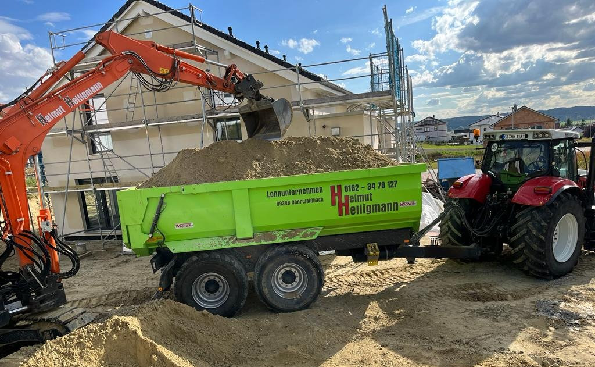

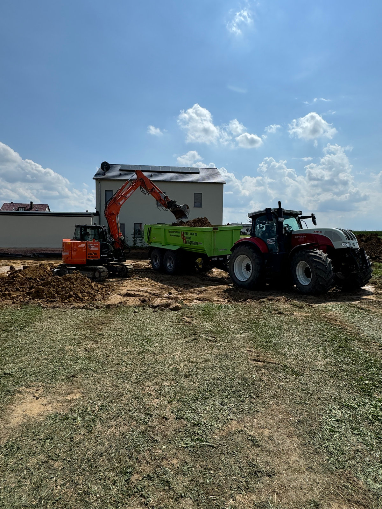


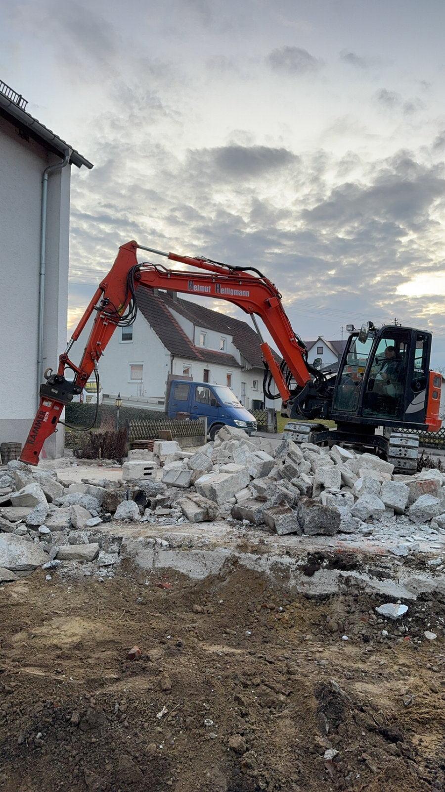


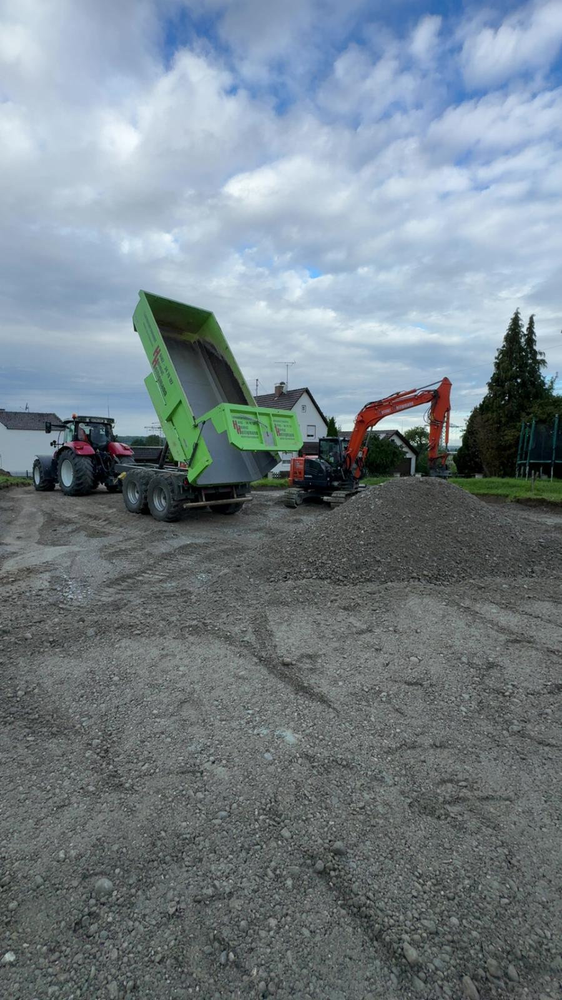
Landwirtschaft & Maschinen


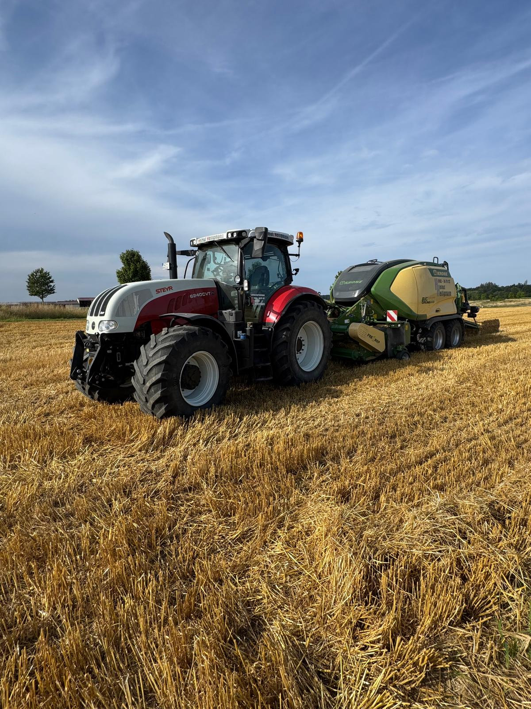


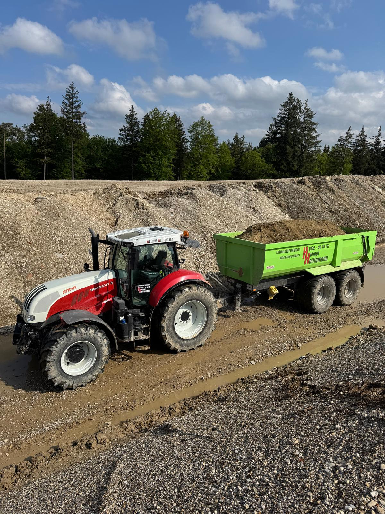

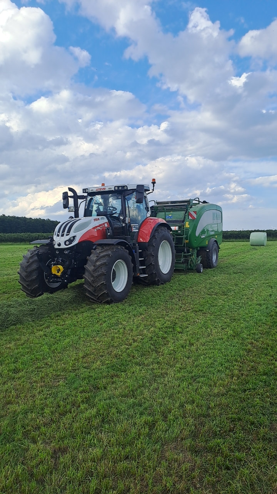
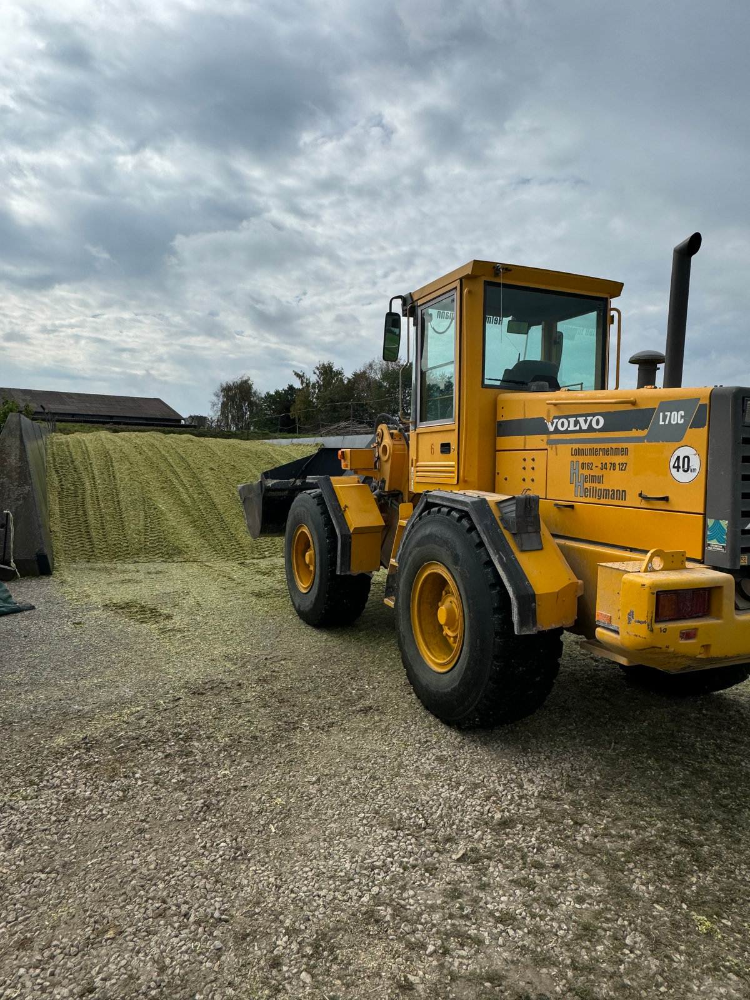
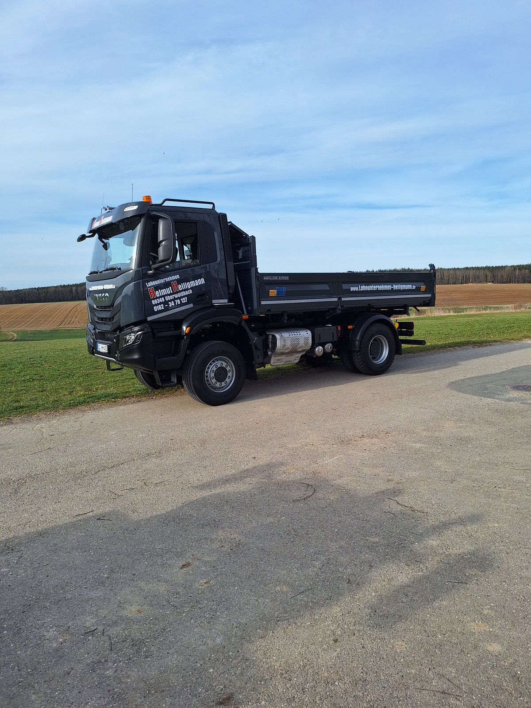
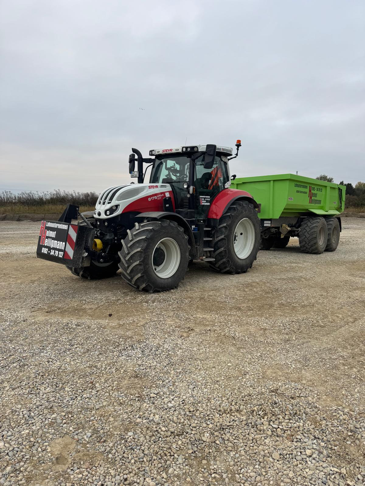
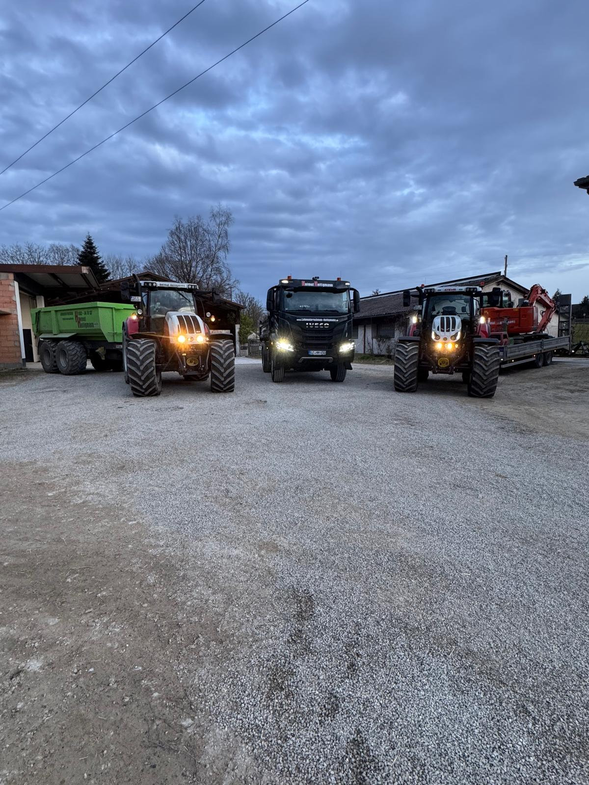
Angus-Herde & Hof